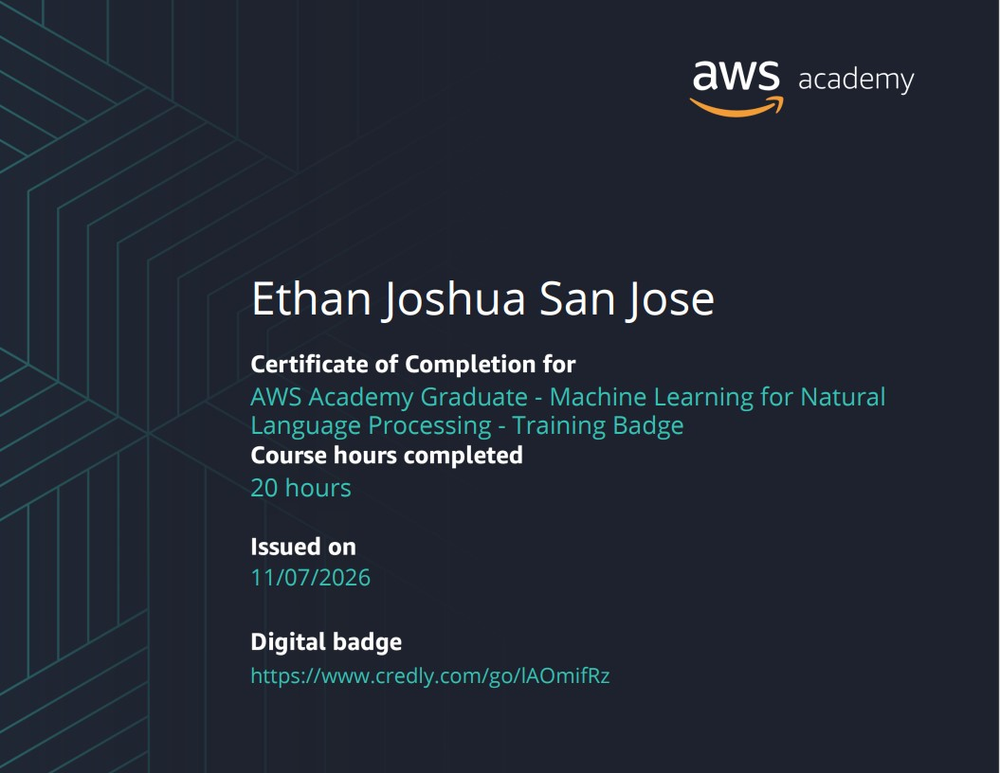
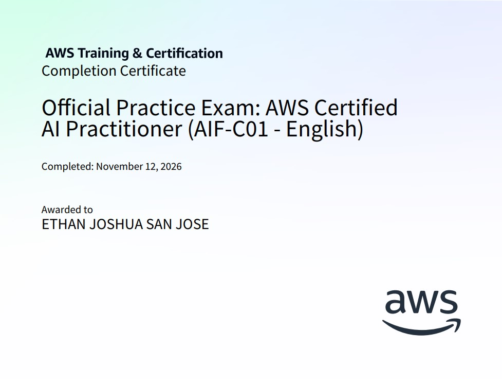
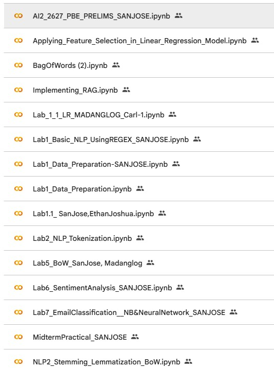

FINAL PROJECT
SentiQuick
A Sentiment Analysis System that helps businesses to automatically process and analyze large amounts of text reviews
SUBJECT PORTFOLIO
Welcome to my Artificial Intelligence 2 portfolio. This page contains selected projects, certificates, and laboratory activities completed throughout the course.
MY COURSEWORK
Explore the projects, certificates, and activities I completed for Artificial Intelligence 2.
A Sentiment Analysis System that helps businesses to automatically process and analyze large amounts of text reviews

A certificate of completion for the AWS Academy Machine Learning for Natural Language Processing course.

A certificate recognizing the completion of the AWS Certified AI Practitioner practice examination.

A collection of laboratory activities and exercises completed throughout the Artificial Intelligence 2 course. Visit the repository to explore the work.